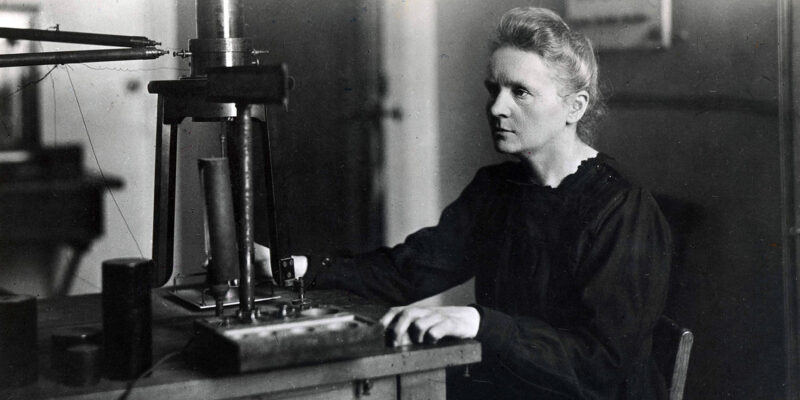
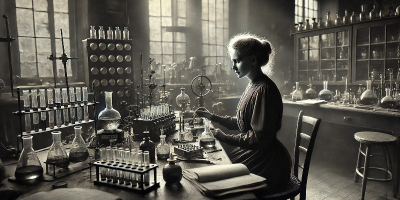

Marie Curie, nascida na Polônia em 1867 e falecida na França em 1934. Conhecida como mãe da radioatividade, foi uma física e química naturalizada francesa que conduziu pesquisas pioneiras sobre radioatividade. Ela foi a primeira mulher a ganhar um Prêmio Nobel, a primeira pessoa a ganhar um Prêmio Nobel duas vezes e a única pessoa a ganhar um Prêmio Nobel em dois campos científicos. Ela foi, em 1906, a primeira mulher a se tornar professora na Universidade de Paris. Descobriu os elementos Polônio e Rádio.
O efeito da radioatividade é tão grande que hoje, mais de 100 anos após suas descobertas, os cadernos que a cientista utilizava ainda estão contaminados pelas substâncias. Hoje, seus arquivos são guardados em caixas de chumbo: para acessá-los, é preciso assinar um termo de responsabilidade.
Marie Curie ganhou um grama de Rádio para continuar suas pesquisas graças a uma arrecadação feita por mulheres norte-americanas, naquele período, esse material era extremamente caro. O presidente dos EUA durante aquele período, Warren G. Harding, e sua esposa, Florence Harding, apoiaram o esforço de angariação de fundos.
Marie Curie nasceu e cresceu em Varsóvia, na Polônia, que na época era controlada pelo Império Russo. Ela obteve sua educação universitária na Flying University, uma instituição polonesa secreta que educava mulheres em locais que migravam de acordo com a necessidade.